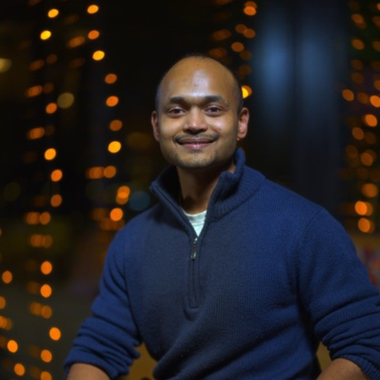
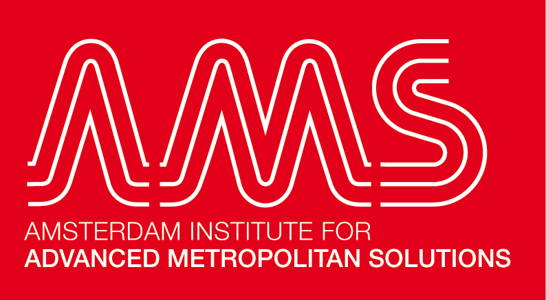
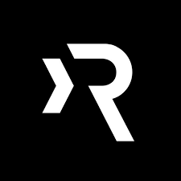
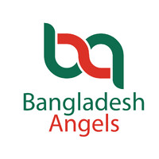
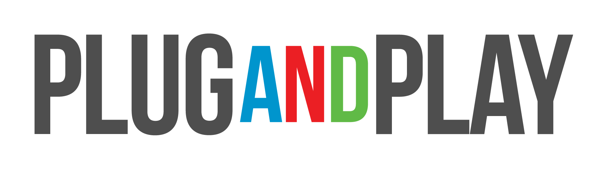
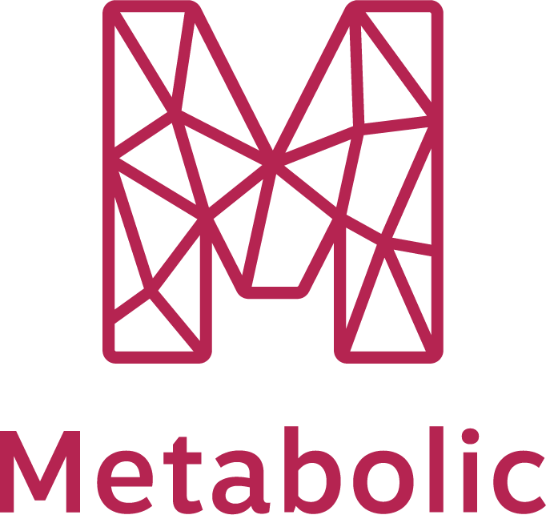
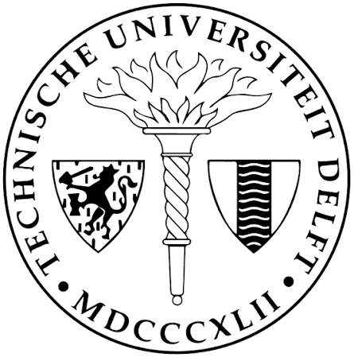

Navojit Dastidar, founder. Runs startup scouting and jury selection for Amsterdam Circular.
Running a program means finding strong startups, talking to them, tracking every lead, and preparing a decision, all while most search results turn out to be consultancies, foundations, and established companies. Existing scouting platforms cover only part of that and come with premium price tags.
With Scout Engine, you receive the whole process, from first search to final selection, at a fraction of the cost.





Accelerators, incubators, VCs, angel networks, and corporate innovation teams that want a steady flow of relevant startups and a professional selection process without building a large in-house team.
Tell us the sectors you care about, such as circular economy, climate tech, or health tech. You receive a list of companies that are genuinely early-stage tech startups, with consultancies, nonprofits, and legacy firms already filtered out.
You get startups that have been spoken to directly, with fit, stage, and interest in your program confirmed before they reach you.
You always see where each startup stands, from first contact to final decision, in a web application or spreadsheet. Optional CRM integration keeps everything in the system you already use.
You receive the top startups for your program, evaluated against your criteria, so you start from the strongest candidates.
You receive the materials and insights your decision-makers need, plus support throughout the selection process.
Your team focuses on decisions and relationships, not research and admin.
You get a full scouting and dealflow service without the enterprise-level price tag.
You see startups you would have missed in manual searches.
Every search is held to the same standard, and your jury or committee works from a structured, well-documented process.
Navojit has spent his career on both sides of startup selection. As Operations Lead at AMS Institute he runs Amsterdam Circular, a City of Amsterdam–backed program for circular economy startups: scouting high-potential ventures, running the top-10 selection with the jury, and onboarding startups and experts.
He holds joint master's degrees in Industrial Ecology (TU Delft and Leiden) and Circular Economy (Graz).

Operations Lead, AMS Institute2024–now
Investment Analyst, Rockstart2022–23
Associate, Bangladesh Angels2020–22
Ventures Intern, Plug and Play2021–22
Ventures Intern, Metabolic2021
Tell us the sectors you care about, such as circular economy, climate tech, or health tech.
Thanks. Navojit will be in touch with your sample list.